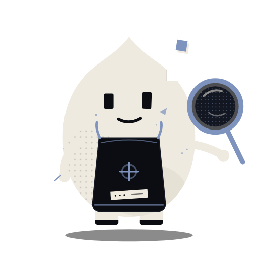
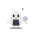

Curious
Leans in first. Asks the proof what it is hiding, then checks the edge it would rather not show.
 Dither Studio
Dither Studio
The smallest mark in the shop.
A halftone dot that missed the paper and stayed. Mote checks the edges, keeps the registration honest, and holds the proof strip up to the light.
“Every mark is a decision.”

Mote is the mark that stayed. Not a guide, not a chatbot, not a mascot with a slogan. An apprentice with a job: look closer, keep the proof true, and leave one thing slightly out of place.
“Mind the registration.”
Short, dry, never scolding. Mote speaks in press-room imperatives. No exclamation marks. No explaining the joke.
Leans in first. Asks the proof what it is hiding, then checks the edge it would rather not show.
Checks registration twice. It will not call a loose mark a mistake until it has looked at the whole sheet.
Keeps one pixel out of register, just to see if you notice. It always has a reason; it rarely says it.
The silhouette has one job: be a dot with a bite, not a generic character. At 32 px the loupe is a blue ring, the apron is a black block and the eye is a dark square. Bite, face, trade.


The PNGs are transparent, cut from the master at these sizes. The animated SVG carries its own styles, so it needs no script and no runtime.
Mote is drawn for the quiet surfaces. This copy is unlisted: no links from the film, no 404, no sitemap. The God keeps the masthead, the hero and the app icon.